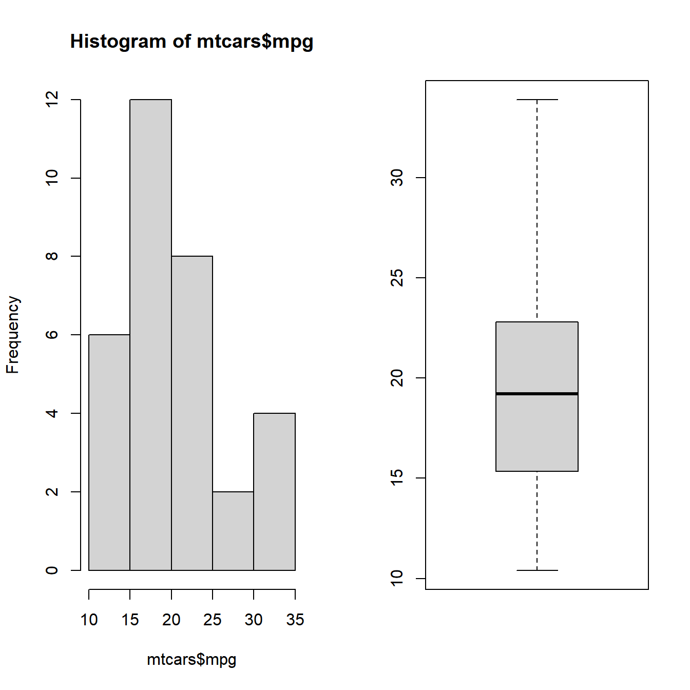
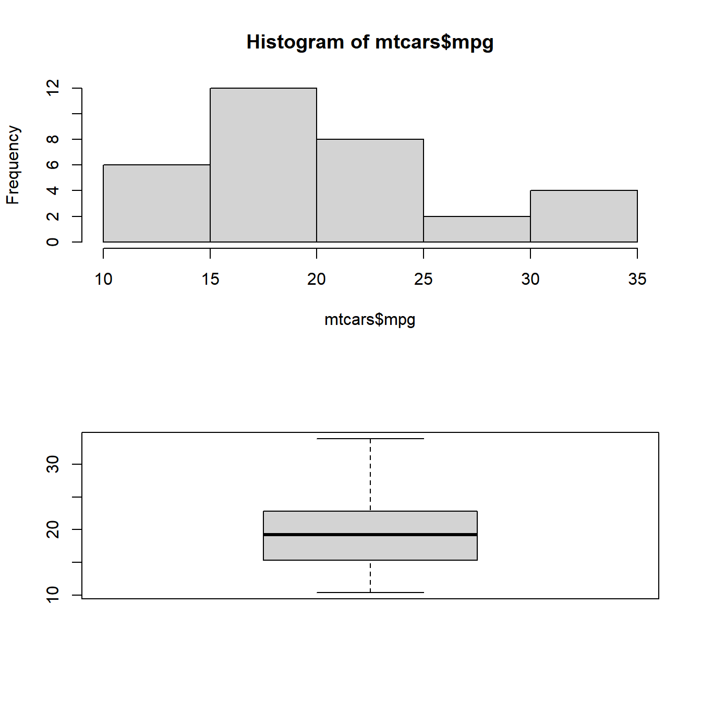
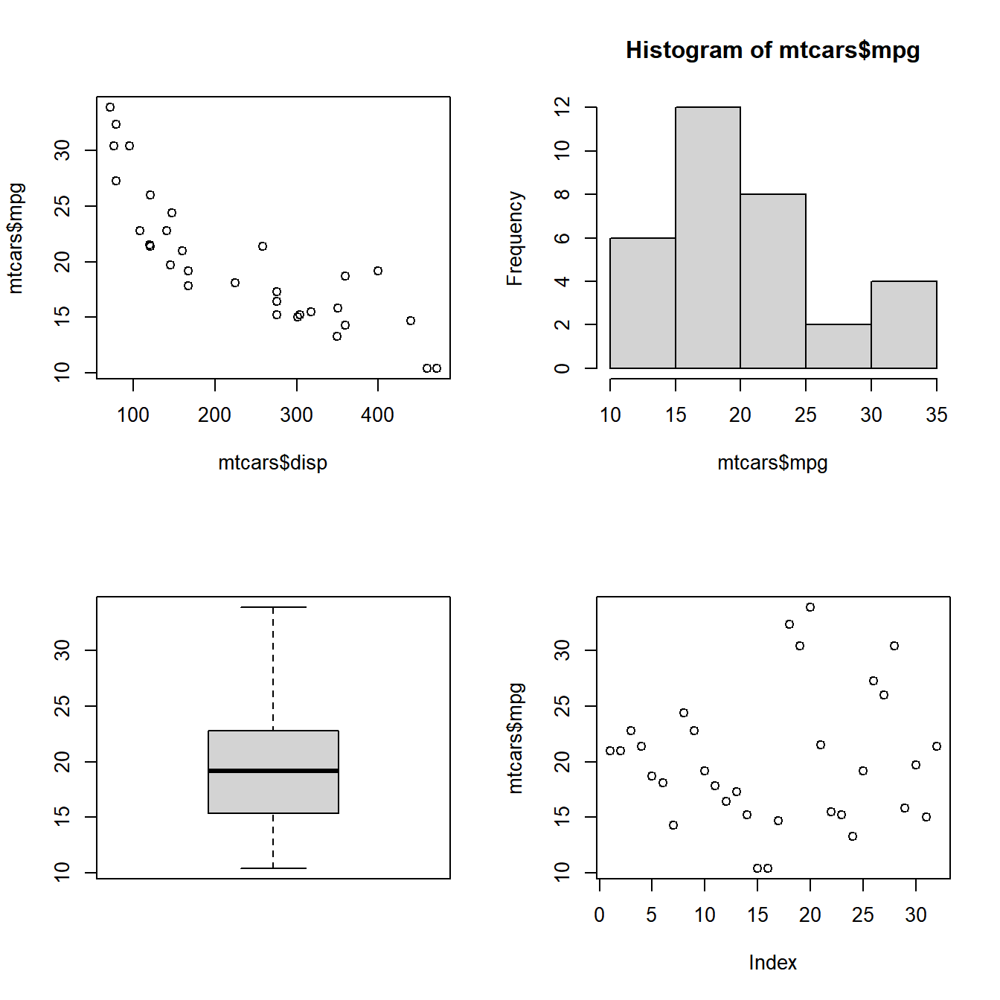
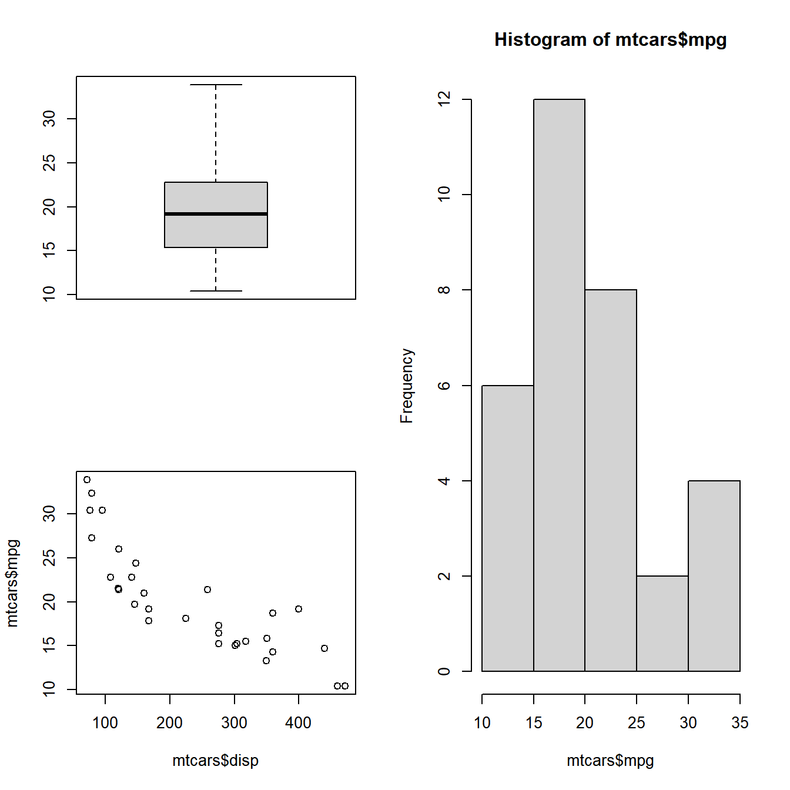
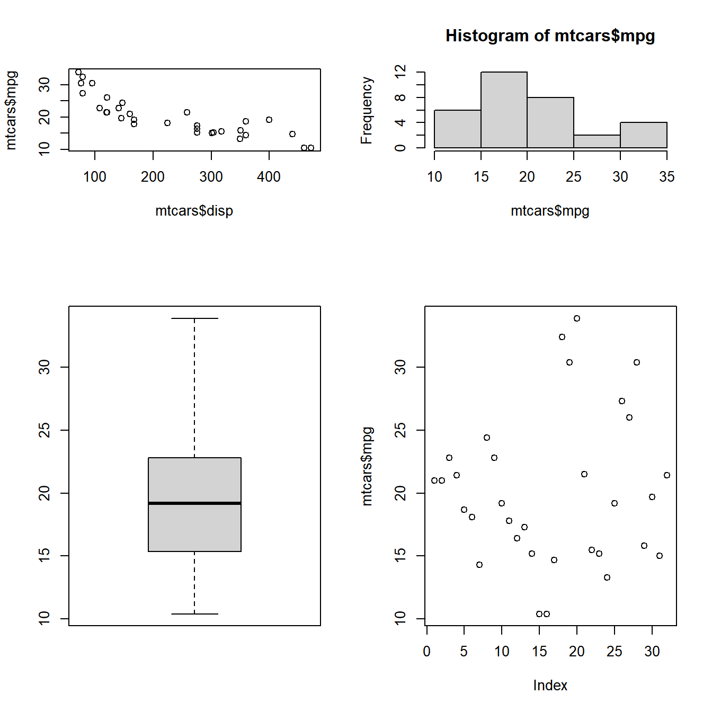
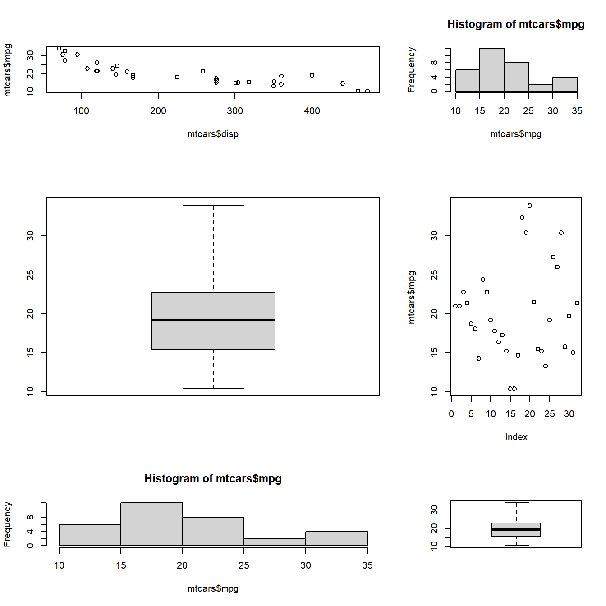

Chapter 10 Faceting
10.1 Introduction
In this chapter, we will learn how to combine multiple plots. Often, it is useful to have multiple plots in the same frame as it allows us to get a comprehensive view of a particular variable or compare among different variables. The Graphics package offers two methods to combine multiple plots. par() can be used to set graphical parameters regarding plot layout using the mfcol and mfrow arguments. layout() serves the same purpose but offers more flexibility by allowing us to modify the height and width of rows and columns.
par() allows us to customize the graphical parameters(title, axis, font, color, size) for a particular session. For combining multiple plots, we can use the graphical parameters mfrow and mfcol. These two parameters create a matrix of plots filled by rows and columns respectively. Let us combine plots using both the above parameters.
| Option | Description | Arguments |
|---|---|---|
| mfrow | Fill by rows | Number of rows and columns |
| mfcol | Fill by columns | Number of rows and columns |
10.2 Row
mfrow combines plots filled by rows i.e it takes two arguments, the number of rows and number of columns and then starts filling the plots by row. Below is the syntax for mfrow.
Let us begin by combining 4 plots in 2 rows and 2 columns:
10.2.1 Case Study 1
Let us begin by combining 4 plots in 2 rows and 2 columns. The plots will be filled by rows as we are using the mfrow function:
10.2.2 Case Study 2
Combine 2 plots in 1 row and 2 columns.
# store the current parameter settings in init
init <- par(no.readonly=TRUE)
# specify that 2 graphs to be combined and filled by rows
par(mfrow = c(1, 2))
# specify the graphs to be combined
hist(mtcars$mpg)
boxplot(mtcars$mpg)
10.2.3 Case Study 3
Combine 2 plots in 2 rows and 1 column.
# store the current parameter settings in init
init <- par(no.readonly=TRUE)
# specify that 2 graphs to be combined and filled by rows
par(mfrow = c(2, 1))
# specify the graphs to be combined
hist(mtcars$mpg)
boxplot(mtcars$mpg)
10.2.4 Case Study 4
Combine 3 plots in 1 row and 3 columns.
10.2.5 Case Study 5
Combine 3 plots in 3 rows and 1 column.
10.3 Column
mfcol combines plots filled by columns i.e it takes two arguments, the number of rows and number of columns and then starts filling the plots by columns. Below is the syntax for mfrow:
Let us begin by combining 4 plots in 2 rows and 2 columns:
10.3.1 Case Study 6
Combine 3 plots in 3 rows and 1 column.
10.4 Special Cases
What happens if we specify lesser or more number of graphs? In the next two examples, we will specify lesser or more number of graphs than we ask the par() function to combine. Let us see what happens in such instances:
Case 1: Lesser number of graphs specified We will specify that 4 plots need to be combined in 2 rows and 2 columns but provide only 3 graphs.
Case 2: Extra graph specified We will specify that 4 plots need to be combined in 2 rows and 2 columns but specify 6 graphs instead of 4.
10.4.1 Case Study 7
# store the current parameter settings in init
init <- par(no.readonly=TRUE)
# specify that 4 graphs to be combined and filled by rows
par(mfrow = c(2, 2))
# specify the graphs to be combined
plot(mtcars$disp, mtcars$mpg)
hist(mtcars$mpg)
boxplot(mtcars$mpg)
# restore the setting stored in init
par(init)
10.5 Layout
At the core of the layout() function is a matrix. We communicate the structure in which the plots must be combined using a matrix. As such, the layout function is more flexible compared to the par() function.
| Option | Description | Value |
|---|---|---|
| matrix | matrix specifying location of plants | matrix |
| widths | width of columns | vector |
| heights | height of rows | vector |
Let us begin by combining 4 plots in a 2 row/2 column structure. We do this by creating a layout using the matrix function.
10.5.1 Case Study 1
Combine 4 plots in 2 rows/2 columns filled by rows.
# specify the layout
# 4 plots to be combined in 2 row/ 2 columns and arranged by row
layout(matrix(c(1, 2, 3, 4), nrow = 2, byrow = TRUE))
# specify the 4 plots
plot(mtcars$disp, mtcars$mpg)
hist(mtcars$mpg)
boxplot(mtcars$mpg)
plot(mtcars$mpg)
10.5.2 Case Study 2
Combine 4 plots in 2 rows/2 columns filled by columns
To fill the plots by column, we specify byrow = FALSE in the matrix.
10.5.3 Case Study 3
Combine 3 plots in 2 rows/2 columns filled by rows
The magic of the layout() function begins here. We want to combine 3 plots and the first plot should occupy both the columns in row 1 and the next 2 plots should be in row 2. If you look at the matrix below, 1 is specified twice and since the matrix is filled by row, it will occupy both the columns in the first row. Similarly the first plot will occupy the entire first row. It will be crystal clear when you see the plot.
# specify the matrix
matrix(c(1, 1, 2, 3), nrow = 2, byrow = TRUE)
## [,1] [,2]
## [1,] 1 1
## [2,] 2 3
# 3 plots to be combined in 2 row/ 2 columns and arranged by row
layout(matrix(c(1, 1, 2, 3), nrow = 2, byrow = TRUE))
# specify the 3 plots
plot(mtcars$disp, mtcars$mpg)
hist(mtcars$mpg)
boxplot(mtcars$mpg)10.5.4 Case Study 4
Combine 3 plots in 2 rows/2 columns filled by rows
The plots must be filled by rows and the third plot must occupy both the columns of the second row while the other two plots will be placed in the first row. The matrix would look like this:
# specify the matrix
matrix(c(1, 2, 3, 3), nrow = 2, byrow = TRUE)
## [,1] [,2]
## [1,] 1 2
## [2,] 3 3
# 3 plots to be combined in 2 row/ 2 columns and arranged by row
layout(matrix(c(1, 2, 3, 3), nrow = 2, byrow = TRUE))
# specify the 3 plots
hist(mtcars$mpg)
boxplot(mtcars$mpg)
plot(mtcars$disp, mtcars$mpg)
10.5.5 Case Study 5
Combine 3 plots in 2 rows/2 columns filled by columns
The plots must be filled by columns and the first plot must occupy both the rows of the first column while the other two plots will be placed in the second column in two rows. The matrix would look like this:
# specify the matrix
matrix(c(1, 1, 2, 3), nrow = 2, byrow = FALSE)
## [,1] [,2]
## [1,] 1 2
## [2,] 1 3
# 3 plots to be combined in 2 row/ 2 columns and arranged by columns
layout(matrix(c(1, 1, 2, 3), nrow = 2, byrow = FALSE))
# specify the 3 plots
hist(mtcars$mpg)
plot(mtcars$disp, mtcars$mpg)
boxplot(mtcars$mpg)
10.5.6 Case Study 6
Combine 3 plots in 2 rows/2 columns filled by columns
The plots must be filled by columns and the first plot must occupy both the rows of the second column while the other two plots will be placed in the first column in two rows. The matrix would look like this:
# specify the matrix
matrix(c(1, 2, 3, 3), nrow = 2, byrow = FALSE)
## [,1] [,2]
## [1,] 1 3
## [2,] 2 3
# 3 plots to be combined in 2 row/ 2 columns and arranged by columns
layout(matrix(c(1, 2, 3, 3), nrow = 2, byrow = FALSE))
# specify the 3 plots
boxplot(mtcars$mpg)
plot(mtcars$disp, mtcars$mpg)
hist(mtcars$mpg)
In all the layouts created so far, we have kept the size of the rows and columns equal. What if you want to modify the width and height of the columns and rows? The widths and heights arguments in the layout() function address the above mentioned issue. Let us check them out one by one: The widths argument is used for specifying the width of the columns. Based on the number of columns in the layout, you can specify the width of each column. Let us look at some examples.
10.5.7 Case Study 7
Width of the 2nd column is twice the width of the 1st column
# specify the matrix
matrix(c(1, 2, 3, 4), nrow = 2, byrow = TRUE)
## [,1] [,2]
## [1,] 1 2
## [2,] 3 4
# 4 plots to be combined in 2 row/ 2 columns and arranged by columns
layout(matrix(c(1, 2, 3, 4), nrow = 2, byrow = TRUE), widths = c(1, 3))
# specify the plots
plot(mtcars$disp, mtcars$mpg)
hist(mtcars$mpg)
boxplot(mtcars$mpg)
plot(mtcars$mpg)10.5.8 Case Study 8
Width of the 2nd column is twice that of the first and last column
# specify the matrix
matrix(c(1, 2, 3, 4, 5, 6), nrow = 2, byrow = TRUE)
## [,1] [,2] [,3]
## [1,] 1 2 3
## [2,] 4 5 6
# 6 plots to be combined in 2 row/ 3 columns and filled by rows
layout(matrix(c(1, 2, 3, 4, 5, 6), nrow = 2, byrow = TRUE), widths = c(1, 2, 1))
# specify the plots
plot(mtcars$disp, mtcars$mpg)
hist(mtcars$mpg)
boxplot(mtcars$mpg)
plot(mtcars$mpg)
hist(mtcars$mpg)
boxplot(mtcars$mpg)The heights arguments is used to modify the height of the rows and based on the number of rows specified in the layout, we can specify the height of each row.
10.5.9 Case Study 9
Height of the 2nd row is twice that of the first row
# 4 plots to be combined in 2 row/ 2 columns and filled by rows
layout(matrix(c(1, 2, 3, 4), nrow = 2, byrow = TRUE), heights= c(1, 2))
# specify the 4 plots
plot(mtcars$disp, mtcars$mpg)
hist(mtcars$mpg)
boxplot(mtcars$mpg)
plot(mtcars$mpg)
10.6 Putting it all together…
Before we end this section, let us combine plots using both the widths and heights option
# specify the matrix
matrix(c(1, 2, 3, 4, 5, 6), nrow = 3, byrow = TRUE)
## [,1] [,2]
## [1,] 1 2
## [2,] 3 4
## [3,] 5 6
# 6 plots to be combined in 3 row/ 2 columns and arranged by rows
layout(matrix(c(1, 2, 3, 4, 5, 6), nrow = 3, byrow = TRUE), heights= c(1, 2, 1),
widths = c(2, 1))
# specify the 6 plots
plot(mtcars$disp, mtcars$mpg)
hist(mtcars$mpg)
boxplot(mtcars$mpg)
plot(mtcars$mpg)
hist(mtcars$mpg)
boxplot(mtcars$mpg)